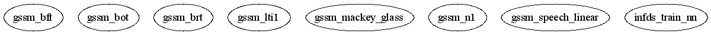

Master index
Index for .\ReBEL-0.2.7\examples\gssm
Dependency Graph for .\ReBEL-0.2.7\examples\gssm

Generated on Tue 26-Sep-2006 10:36:17 by
m2html
© 2003
 Master index
Master index Master index
Master index